THE FORSAKEN LIGHT
SQUAD
| 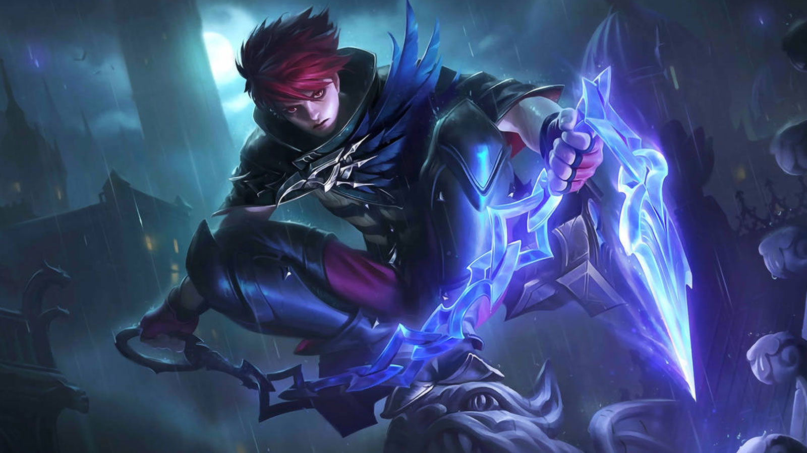 | Weapon Master, All Arounder, and Mage. Julian, also known as “Scarlet Raven”, is an elite warrior and a core member of the “Forsaken Light squad”. Ever since his youth, he has embarked on dangerous expeditions in search for his family and home. |
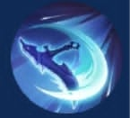 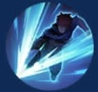 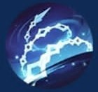Scythe Sword Chain |
|---|
| 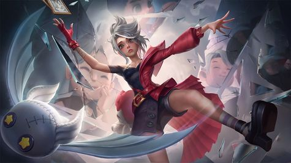 | Doll and Needle Master, tailor prodigy, and marksman. Melissa, also known as “The Cursed Needle” is the most renowed member of the “Forsaken Light squad”. At an early age of 16, she established the worldwide famous “Melissa’s Tailor” in the small town of Lumina. |
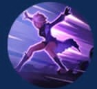 Doll Buster Falling! Go Away! |
|---|
| 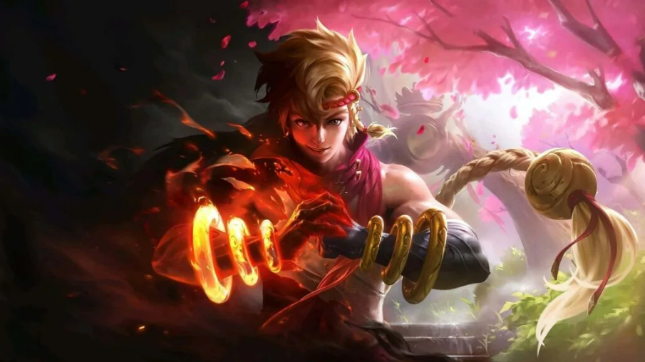 | Martial Genius, Aspiring student, Fighter. Yin, also known as “The Fists of Valor”, is the strongest and most talented member of “The Forsaken Light squad”. Bearing a curse from an “Evil God”, he travels to the Moniyan Empire to find a cure and save his life. |
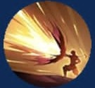 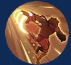 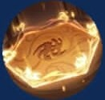Charged Punch Instant Blast My Turn! |
|---|
| 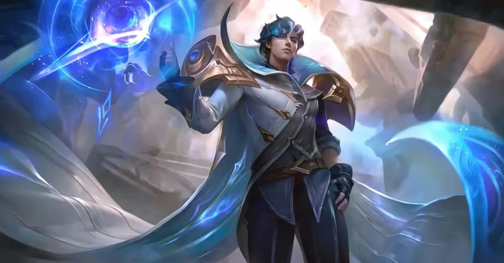 | Knight of light, Alchemist, and Scientist. Xavier, known as “The Defier of Light”, is the founder, captain, and leader of the “Forsaken Light squad”. In pursue of more power and influence, he sacrifices his “Humanity” to gain immortality and inherit extraordinary powers. |
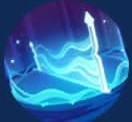 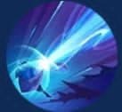Infinite Extension Mystic Field Dawning Light |
|---|
| 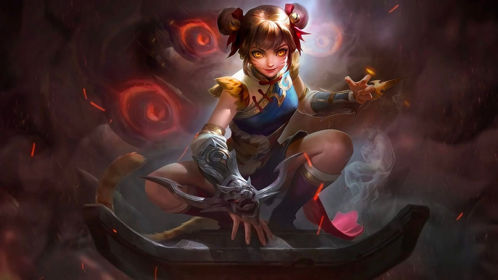 | Young lady of the Tang Family, dart master, marksman. Wanwan, also known as “The Agile Tiger”, is a key figure and trustworthy ally of the “Forsaken Light Squad”. Together with other heroes, she fights for peace, equality, and order. |
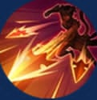
Swallow's Path Needles in Flowers Crossbow of Tang |
|---|